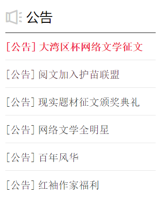

- 红色经典
“红色”是指流贯在作品血脉中的革命精神和英雄主义的思想风貌。通过阅读红色经典书籍，开启震撼心灵之旅，在超越时空的对话里，将红色精神一直秉承下去。
- 言情小说
言情小说是中国旧体小说的一种，又称才子佳人小说。以讲述异性相爱为中心，通过完整的故事情节和具体的环境描写来反映爱情的心理、状态、事物等社会生活的一种文学体裁。
- 中外经典
经典与名著是人类文明的积累和文化思想的结晶。它凝结了人类的智慧，对人类历史产生过重大的影响。它经历了长时间的考验，并得到了众人的认可。概括地说，它是超时代、超种族、超文本的作品。
- 原创小说
自己所构思的小说，其中没有出现任何一部小说的一模一样的几段文字（简称抄袭），故事中情节完全是由自己所想所写的小说。